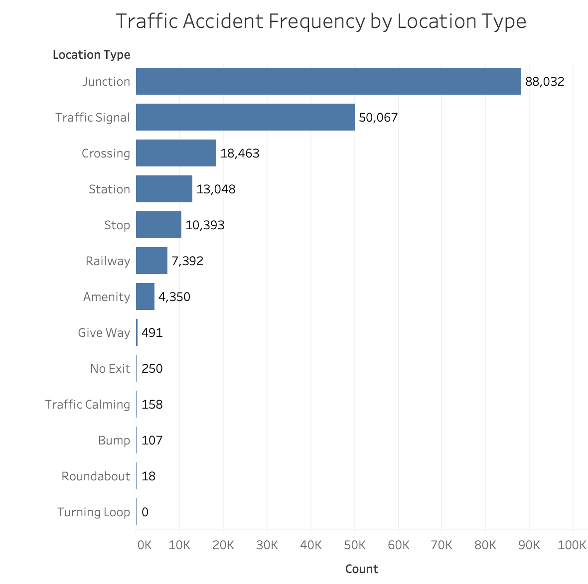

4 years, 49 US states, 3.0 billion accidents.

Counts by Location Types
The frequency of traffic accidents by location type is the highest at junctions, and the second highest at traffic signals.
Distribution of LA Accidents
An example distribution of accidents in the LA area. Orange dots represent accidents at traffic signals, while blue dots represent all other accidents. The size of the dot represents the number of accidents at that latitude, longitude.
In this project, we both learned the many factors that can ultimately influence the likelihood of a car accident and some good and not so good ways of conveying these factors.
To extend this project further, our next steps would likely be incorporating even more interaction and transparency in the above visualizations by incorporating more information that we have from the dataset. We would also likely explore other factors that influence traffic accidents, such as weather conditions and time of day, and extend our findings to other parts of the country and world.